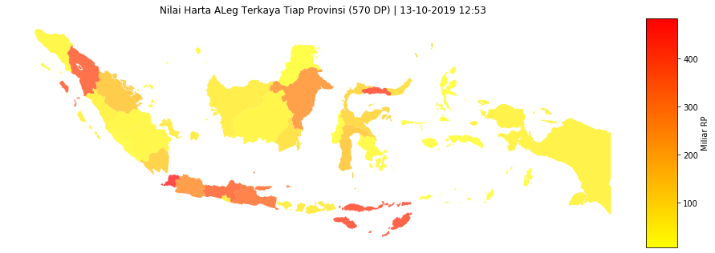
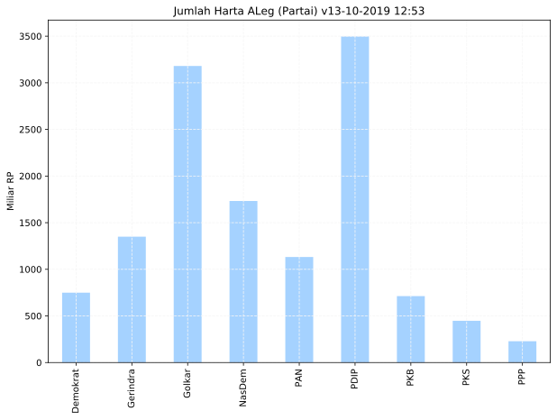
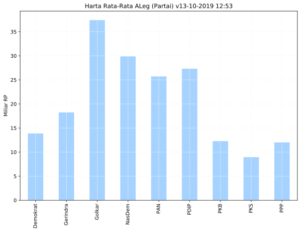
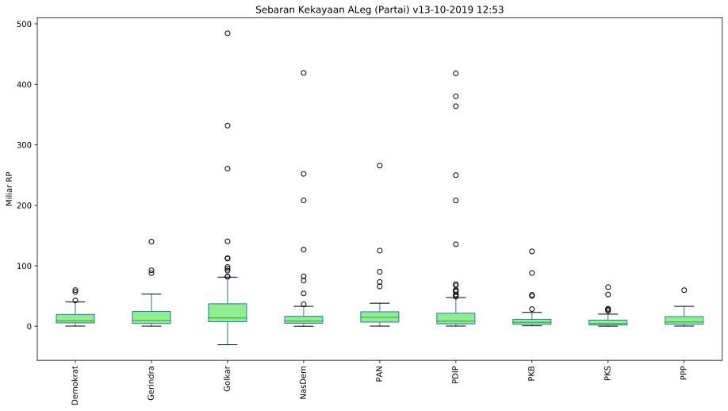

Last updated: 13-10-2019 12:53
Data Science Wakil Rakyat
Highlight Data ALeg Partai
575 ALeg | 570 Seed Data Points
Visualisasi dan Olah Data Terbuka Anggota DPR RI 2019.
Data tidak / kurang akurat? Bantu kami meningkatkan kualitas data dengan mengisi form ini.

Data ALeg Partai
| # | Partai | ALeg | Jumlah Harta | Mean |
|---|---|---|---|---|
| 1 | Demokrat | 54 | 749.4 | 13.9 |
| 2 | Gerindra | 74 | 1349.9 | 18.2 |
| 3 | Golkar | 85 | 3180.5 | 37.4 |
| 4 | NasDem | 58 | 1732.5 | 29.9 |
| 5 | PAN | 44 | 1132.0 | 25.7 |
| 6 | PDIP | 128 | 3497.5 | 27.3 |
| 7 | PKB | 58 | 712.4 | 12.3 |
| 8 | PKS | 50 | 447.5 | 9.0 |
| 9 | PPP | 19 | 228.2 | 12.0 |
Peringkat 1 Tiap Partai
| # | Provinsi | Partai | ALeg | Jumlah Harta |
|---|---|---|---|---|
| 1 | Jawa Barat | Demokrat | DIDI IRAWADI SYAMSUDIN. LL.M | 59.8 |
| 2 | Sulawesi Selatan | Gerindra | LA TINRO LA TUNRUNG | 140.0 |
| 3 | Banten | Golkar | ANDI ACHMAD DARA | 484.4 |
| 4 | Gorontalo | NasDem | RACHMAD GOBEL | 419.0 |
| 5 | Jawa Barat | PAN | EDDY SOEPARNO | 265.6 |
| 6 | Nusa Tenggara Timur | PDIP | HERMAN HERY | 418.1 |
| 7 | Lampung | PKB | MUHAMMAD KHADAFI | 123.7 |
| 8 | Jawa Barat | PKS | FAHMI ALAYDROES | 64.7 |
| 9 | Jawa Barat | PPP | NURHAYATI | 59.7 |
Jumlah Kekayaan ALeg (Provinsi)

Kekayaan Rata-Rata

Sebaran Kekayaan ALeg (Partai)
